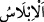
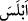

Mesnevî’de der ki:
Bizim için veba meltemden yeğdir, diyerek
Sebeliler, hadlerini aşınca,
Onlara öğüt veren öğütçüler gelip
Fısk ve küfürlerini engellemeye çalıştılar.
Mazlumlar için kuyu kazıyorlardı.
Kazdıkları kuyuya kendileri düşüp ah eder oldular.
İsteği sabır elde ettirir, acele değil.
Sabret, doğrusunu en iyi Allah bilir.
Büyüklerden birisi der ki: Dünyayı ve şehvetlerini istemek, Allah’tan ve O’nun
huzurundan uzaklaşmayı istemek demektir. Dünyaya meyletmek ve dünyanın şehvetlerine
rağbet göstermek ise nefsin hasisliğinden ve aklın zayıflığındandır. Bu ise kendine
zulmetmektir. Dünya kimi Allah’tan koparırsa Allah onu taleb ehline ibret yapar ve
helâk vâdisine yuvarlar. Öyleyse dünyaya ve şehvetlerine karşı sabretmek, Allah’ın
koruması ve kulluğa muvaffak kılması nimetine şükretmek lâzımdır.
Allah bizi ve sizi kendine rağbet edip yönelen, O’na îtimad edip güvenen kullarından
eylesin. Yolundan dönmekten, irşâd edip muvaffak kıldıktan sonra dalâlete düşüp
yoldan sapmaktan korusun. Çünkü O, kalbler ve onların halden hâle çevrilmesi, gece
gündüz nasıl dilerse kalblerin tasarrufu elinde olan Rahmân’dır.
20. Andolsun İblis, onlar hakkındaki tahminini doğruya çıkardı. İnanan bir
zümrenin dışında hepsi ona uydular.
“Andolsun İblis, onlar hakkındaki tahminini doğruya çıkardı.”
Burada “onlar” zamiri, daha önce zikredildikleri için Sebe halkına râcidir. Ancak
daha âşikâr olan bu zamirin tüm insanlara râci olmasıdır. Nitekim âyetin devamı buna
delildir.
İblis kelimesi, şiddetli ümitsizlikten meydana gelen hüzün demek olan “
”
kökünden gelmektedir. Nitekim el-Müfredât’ta böyle geçmektedir. el-Kâmûs’te ise
şöyle der: “
” ümitsiz oldu, şaştı demektir. İblis kelimesi de bundandır. Ya da aslen
Arapça olmayıp Arapça’ya sonradan girmiş bir kelimedir.”
Zan ise bir şeyin aksi de muhtemel olmakla birlikte onunla ilgili ağır basan inançtır.
Bir şeyin mazinnesi, var olup bulunduğu zannedilen yer demektir. Mânâ şöyledir:
Allah’a yemin olsun ki İblis, Sebelilerin şehvetlere daldıklarını görünce onlar
hakkındaki zannını doğru buldu.